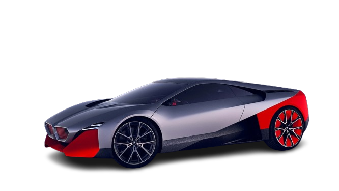
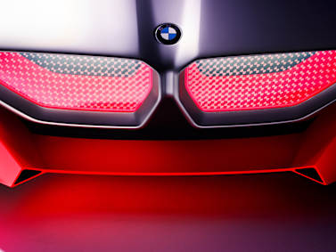
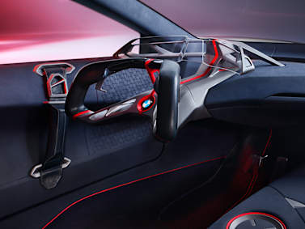
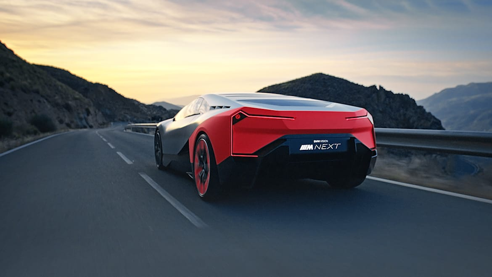
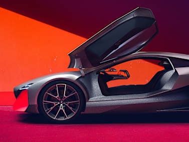

BMW
VISION M NEXT
DRIVEN BY DESIGN.
The BMW Vision M NEXT: from sketch to Vision Vehicle.
The design of the BMW Vision M NEXT provides a taste of
the electrified future of high-performance
automobiles The fact that nothing was left to chance in
the design of the BMW Vision M NEXT is evident at first
glance.

Handle it like a pro.
The fact that nothing was left to chance in the design
of the BMW Vision M NEXT is evident at first glance. Its
emotion-stirring exterior design clearly announces the
BMW Vision Vehicle’s performance potential. The striking
proportions of the sports car are enhanced by a clear,
pared-down surface language. This impression is
reinforced at the front and rear ends in particular by
the matt-neon shade Thrilling Orange, producing a vivid
contrast against the exterior’s otherwise silk-matt Cast
Silver metallic paintwork.
THE POWER OF ATTRACTION.
The design of the BMW Vision M NEXT.
For the BMW Vision M NEXT, the BMW design team
turned to the iconic BMW Turbo and the
groundbreaking BMW i8 for inspiration. In line
with the new BMW design strategy, the BMW Vision
M NEXT exudes a powerful character with its
sporty proportions and the presence of just a
few, crisp lines.
TBMW Vision M NEXT Design
UThe BMW Vision M NEXT is a vision
car that triggers instinctive reflexes in sports car
fans. They want to touch the bodywork, enjoy the
sound of the electric engine or just admire the
dynamic body lines. And today, you can do exactly
that – thanks to our four downloads for BMW lovers
everywhere.
BMW VISION M NEXT




MSRP
$160,000–$180,000
#NEXTGen – the new tech conference from
BMW
Going forward, the BMW Group will present new
technologies, services and products at its own
conference, the BMW Group #NEXTGen. Selected
international journalists, analysts and other
stakeholders will be invited to come together at the
BMW Welt in Munich. The event will also be
live-streamed for the general public.
3D printing: The BMW Vision M NEXT as a model
By clicking the download button, you are confirming
that you have read and accepted the terms of use
mentioned above. Download here (STL file)
FUTURE-FOCUSED CHARACTER.
The BMW Vision M NEXT headlights are positioned on
the outer edges of the front end, above the kidney
grille. Arranged one above the other rather than
side by side, their constituent elements represent a
highly distinctive interpretation of BMW’s classic
four-eyed front end. The headlights hand a debut to
Laser Wire lighting technology, whereby glass fibres
coated with phosphorous are used to produce
headlight elements with a new, super-slim and
extremely precise form. All of which further
underlines the Vision Vehicle’s future-focused
character.
BOOST+.
The Power-PHEV drive of the BMW Vision M NEXT allows
the driver to choose between four electrically
driven wheels or a purist rear-wheel drive – purely
electrically or accelerated by turbocharged
4-cylinder petrol engine. A system output of 441kW
(600 hp) permits a top speed of up to 300 km/h and
catapults the BMW Vision M NEXT from 0 to 100 km/h
in 3 seconds. The range in purely electric driving
mode extends up to 100 km – in most cases this is
sufficient to cover a large proportion of journeys
purely electrically. Consequently, the BMW Vision M
NEXT is also a future-proof sports car for inner
cities with potential zero-emissions zones.
Sound design by Hans Zimmer for the BMW Vision M
NEXT
Hans Zimmer is known worldwide for his film music.
He has composed countless soundtracks for Hollywood
and has won numerous awards. Now Hans Zimmer has
composed the sound for the BMW Vision M NEXT
together with Renzo Vitale, acoustic engineer and
sound designer at the BMW Group.